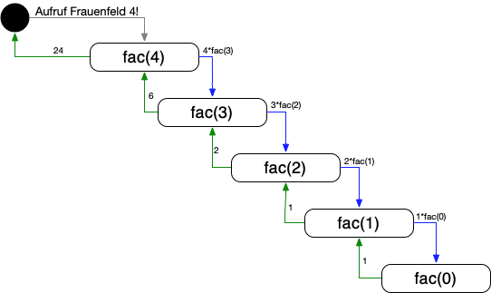

M411 - Algorithmen und Datenstrukturen
<i class="fas fa-graduation-cap"></i> Lektion 8 - Entwurfsmuster: Iteration, Rekursion ============================= Ziele: * Sie können die rekursive Programmform beschreiben und ihren Nutzen (und Probleme) benennen * Sie können rekursive und iterative Programmformen unterscheiden * Sie können einfache, definierte Probleme in rekursiver und iterativer Form umsetzen
<i class="fas fa-graduation-cap"></i> Entwurfsmuster ============================= Unter **Entwufsmuster** versteht man Herangehensweisen, wie Algorithmen aus Anforderungsbeschreibungen gelöst werden können. Der Algorithmenentwurf ist eine **kreative Tätigkeit**, die durch Muster ( **best practices**) unterstützt wird. Der Entwurf von Algorithmen erfolgt nach dem Prinzip der schrittweisen Verfeinerung von Pseudo Code-Algorithmen. Pseudo Code-Teile werden im ersten Schritt durch verfeinerten Pseudo Code ersetzt und im nächsten Schritt durch Programmiersprachen Code. Beispiel: Beispiel: Die Aufgabe: **"Pellkartoffeln kochen"** lösen wir nicht in einem Schritt. Wir verfeinern den Ablauf als **Pseudo-Code**: 1.1 Fülle Topf mit Kartoffeln<br /> 1.2 Füge Wasser dazu<br /> 1.3 Stelle topf auf Herdplatte<br /> 1.4 Stelle Drehknopf auf 7<br /> 1.5 Koche das Wasser ... und erst danach wagen wir uns an den Code. Mit **Entwufsmustern** stehen uns nun Werkzeuge für wiederkehrende Problemstellungen zur Verfügung.
<i class="fas fa-graduation-cap"></i> Entwurfsmuster ============================= Wir sehen uns folgende **Entwufsmuster** etwas genauer an: * **Rekursion** und **Iteration**: Wiederholen von Schritten * **Greedy**: wir suchen maximale oder optimale Lösungen * **Divide and conquer**: Wir teilen ein grosses Problem in kleinere (und immer kleinere) Teilprobleme * **Backtracking**: Wir versuchen eine Lösung, und wenn die nicht geht, gehen wir zurück und versuchen einen anderen Weg Diese Entwurfsmuster sind **keine fertigen Rezepte**, sondern nur Ideen, wie bestimmte Probleme angegangen werden können.
<i class="fas fa-graduation-cap"></i> Iteration ============================= Den Begriff **Iteration** kennen Sie. Erklären Sie ihn im Zusammenhang der Informatik! <div class="fragment"> <blockquote> <p> Iteration (von lateinisch iterare ,wiederholen‘) beschreibt allgemein einen Prozess mehrfachen Wiederholens gleicher oder ähnlicher Handlungen zur Annäherung an eine Lösung oder ein bestimmtes Ziel. </p> </blockquote> </div> <div class="fragment"> <i class="far fa-hand-point-right"></i>Wir reden hier also von **wiederholter Anwendung derselben Funktion**, oder Schleife. Beispiel: ```java int summe(int[] zahlen){ sum = 0; for (int i = 0; i < zahlen.length; i++) { sum += zahlen[i]; } return sum; } ``` Die Schleife wird hier innerhalb der Funktion `summe()` eine bestimmte Anzahl mal wiederholt. Wir kennen dazu das Konstrukt * `for` * `while` </div>
<i class="fas fa-graduation-cap"></i> Rekursion ============================= Rekursion in der Informatik bedeutet? <div class="fragment"> <blockquote> <p> eine definierte Funktion ruft zur Problemlösung sich selber wieder auf. </p> </blockquote> also: ``` methode() { methode(); // Aufruf von sich selber } ``` <i class="far fa-hand-point-right"></i> Auf welche Probleme stossen wir als Programmierer da, wenn wir nicht aufpassen? </div>
<i class="fas fa-graduation-cap"></i> Rekursion ============================= Rekursion in der Informatik bedeutet: > eine definierte Funktion ruft zur Problemlösung sich selber wieder auf. <i class="far fa-hand-point-right"></i> Auf welche Probleme stossen wir als Programmierer da, wenn wir nicht aufpassen? **Wichtig**: Sie brauchen eine gute Abbruchbedingung, ansonsten ruft sich die Funktion theoretisch bis in alle Ewigkeit auf. **Beispiel**: schlechte / falsche Abbruchbedingung: ```java int sum_1_n(int n) { if (n == 1) { return 1; } else { return n + sum_1_n(n - 1); } } input(5); // OK, Resultat: 15 input(-5); // Oops! läuft ewig, resp. Stack Overflow! ``` Besser: ```java int sum_1_n(int n) { if (n > 1) { return n + sum_1_n(n - 1); } else { return n; } } input(5); // OK, Resultat: 15 input(-5); // OK, Antwort -5, da negative Werte nicht unterstützt, aber der Algo läuft durch. ```
<i class="fas fa-graduation-cap"></i> Rekursion ============================= Wo wird Rekursion angewendet? Warum? **Wann** * bei funktionalen Programmiersprachen ohne iterative Mittel obligatorisch * eleganter und "einfacher" Code erwünscht (z.B. bei kompizierten Datenstrukturen, Bäumen) * gute, präzise Abbruchbedingung ist möglich **Wann nicht** * Speicher- und Recheneffizienz ist notwendig * "unmathematische" Algorithmen - grosse Funktionen. Diese werden durch Rekursion sehr schnell sehr kompliziert. **Wieso nicht?** * Durch wiederholten Funktionsaufruf muss der Prozessor immer wieder ein "Context Switch" durchführen - Funktionsaufrufe sind Speicher- und Rechenintensiv.
<i class="fas fa-graduation-cap"></i> Rekursion - Beispiel Fakultät (n!) ============================= `4! = 4 * 3 * 2 * 1` Allgemein: `n! = f(n):` * `(n > 0)! = n*(n - 1)!` * `0! = 1` Also: ``` 4! = 4 * 3! 4 * 3! = 4 * 3 * 2! 4 * 3 * 2! = 4 * 3 * 2 * 1! 4 * 3 * 2 * 1! = 4 * 3 * 2 * 1 * 0! = 4 *3 * 2 * 1 (da 0! = 1 ) ```
<i class="fas fa-graduation-cap"></i> Rekursion - Beispiel Fakultät (n!) ============================= **Was passiert dabei im Speicher?** Unten ist der "Call Stack" symbolisiert - also die Stufen der Funktionsaufrufe und Zwischenergebnisse. ``` Ziel: 4! Also: 4! = 4*3! * ... 3! = 3*2! * ... 2! = 2*1! * ... 1! = 1*0! ... Das wissen wir! 0! ist per Definition 1. * 1! ist also 1*1 = 1 * 2! ist also 2*1*1 = 2 * 3! ist also 3*2*1*1 --> 4! ist also 4*3*2*1*1 = 24 ``` 
<i class="fas fa-graduation-cap"></i> Rekursion - Beispiel Fakultät (n!) ============================= **Rekursive Umsetzung in Java** Implementieren Sie die Fakultäts-Funktion in Java: ```java int fac(int n) { if (n == 0) { return 1; } else { return n*(fac(n-1)); } } ``` Mit der Startzahl 4 würde der Computer somit ausrechnen: `4*(3*(2*(1*fac(0))));` <i class="far fa-hand-point-right"></i> Schauen wir uns den Stack Trace in der IDE an! (Praxis) * Wir benützen den Debugger, um Schritt für Schritt den Algorithmus durchzugehen * So sehen Sie "live", was auf dem Stack passiert.
<i class="fas fa-graduation-cap"></i> Rekursion - Beispiel Fakultät (n!) ============================= **Iterative Umsetzung in Java** Wir können ein rekursives Problem **immer** auch iterativ lösen. Versuchen Sie dies anhand der Fakultäts-Funktion: Kurze Übung für Zwischendurch: Implementieren Sie `int fac(int n)` in Java als ITERATIVE Variante!
<i class="fas fa-graduation-cap"></i> Rekursion - Beispiel Fakultät (n!) ============================= **Iterative Umsetzung in Java** Kurze Übung für Zwischendurch: Implementieren Sie `int fac(int n)` in Java als ITERATIVE Variante! ```java int fac(int n) { int ergebnis = 1; for (int i = 1; i <= n; i++) { ergebnis = ergebnis * i; } return ergebnis; } ``` <i class="far fa-hand-point-right"></i> welche Variante gefällt Ihnen besser?
<i class="fas fa-graduation-cap"></i> Rekursion - Zusammenfassung ============================= Folgende Fakten sind gegeben: * Methoden können sowohl interativ ALS AUCH rekursiv umgesetzt werden. * Rekursion ist für uns schwieriger zu verstehen * Jede iterative Lösung lässt sich auch rekursiv lösen - und umgekehrt. **Iteration** * Durch Schleifen (for, while) gelöst * Abbruchbedingungen beenden die Schleifen * Ergebnis wird schrittweise pro Schleifendurchgang erarbeitet * typischerweise performanter **Rekursion** * Methode ruft sich immer wieder selber auf * Abbruchbedingung beendet die Rekursion * Ergebnis basiert auf rekursiv ermitteltem Teilergebnis * Es lässt sich vieles eleganter lösen (= weniger Quellcode) * Speicherintensiver, da Funktionsaufrufe im Stack zwischengespeichert werden
<i class="fas fa-flask"></i> Rekursion/Iteration - Anwendung: Fibonacci ============================= Eine berühmte mathematische Zahlenfolge ist die **Fibonacci-Reihe**: Sie beschreibt zahlreiche Wachstumsvorgänge in der Natur, und ist eine der wichtigsten Zahlenfolge: https://de.wikipedia.org/wiki/Fibonacci-Folge Sie wird folgendermassen gebildet: `f(n) = f(n-1) + f(n-2)` mit den Anfangswerten: `f(1) = f(2) = 1` Daraus ergibt sich die Folge: `1 1 2 3 5 8 13 ...` **Aufgabe:** * Entwickeln Sie eine Methode `fibonacci(n)`, welche die ersten `n` Werte der Fibonacci-Reihe ausgibt: * `fibonacci(4)` ==> `1 1 2 3` * sowohl _rekursiv_ * wie auch als _iterative_ Variante. * Welches Entwurfsmuster ist eleganter, welches ist effizienter? Warum? * Geben Sie Ihre Lösung via **Moodle** ab!
<i class="fas fa-flask"></i> Rekursion/Iteration - Anwendung: Binary Search ============================= Ein berühmter Algorithmus ist der **Binary Search**-Algorithmus zum schnellen Auffinden von Werten in einer Liste: https://de.wikipedia.org/wiki/Bin%C3%A4re_Suche Der Algorithmus sucht in einer **vorsortierten Liste** (Array) einen bestimmten Wert, und zwar innerhalb der Effizienzklasse **`O(log2(n))`**. In **Pseudo-Code** funktioniert der Algorithmus folgendermassen: ```plain Funktion BinSuche (Suchwert s, Array a): 1. Bestimme das mittlere Element von a --> a[m] 2. Entspricht a[m] dem Suchwert s? --> return s, index[s] 3. Ist Länge(a) <= 1? --> return nicht gefunden 3. Ist s < a[m]? Rekursiver Aufruf von BinSuche mit der richtigen Hälfte von a: 3.1 ja: return BinSuche(s, a[linke Hälfte]) 3.2 nein: return BinSuche(s, a[rechte Hälfte]) ``` **Aufgabe:** * Erzeugen Sie einen vorsortierten Array (z.B. `[1, 3, 5, 8, 13, 21, 34]`) * Setzen Sie den Binary Search-Algorithmus nach oben gezeigtem Pseudo-Code um: * _rekursiv_, so wie oben beschrieben * wie auch als _iterative_ Variante. * Zeigen Sie, dass Ihr Algorithmus den Wert `13` findet: Wieviele Rekursions- resp. Iterationsschritte sind dazu notwendig? * Geben Sie Ihre Lösung via **Moodle** ab!
<i class="fas fa-flask"></i> Rekursion - weitere Aufgaben ============================= Weitere Aufgaben zum Thema Rekursion finden Sie auf Moodle! **Aufgaben über Frühlingsferien:** * lösen Sie mind. eine der Aufgaben **Fibonacci** oder **Binäre Suche** * Lösen Sie die Aufgabe **Unbekannter Algorithmus**